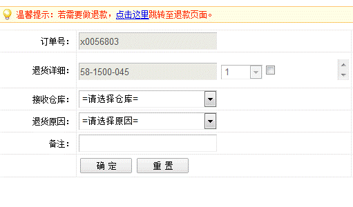
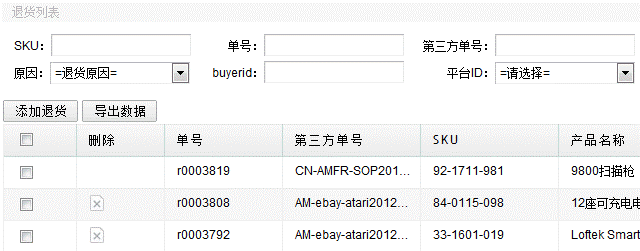

与退款一样，在订单管理->出库订单中的“已出库”状态找到要做退款的那笔订单，然后点击RMA，可以制作RMA。 界面如下，填入信息，点击确认，系统提示生成退货明细表。

退货明细显示如下，刚做入退货单，会显示在最前面，当客人退回的商品仓库接收了，操作了退货入库，此退货单不能再更改，所以前面也不会再显示删除的图标，当仓库还没做退货入库前，该退货单可以删除了重新做，另外可以将页面数据导出表格，点击导出数据即可。
